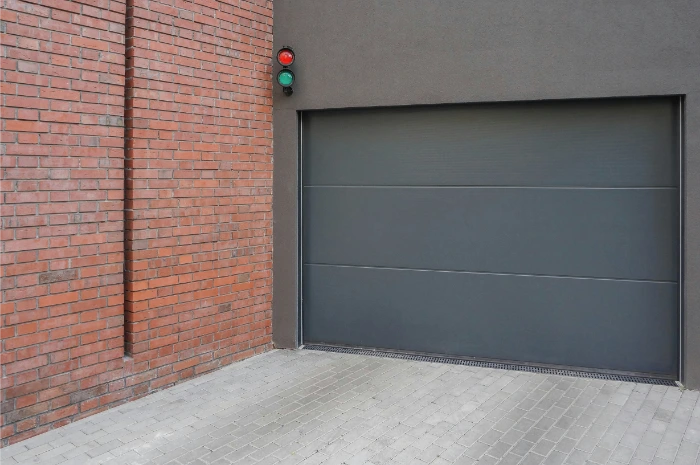
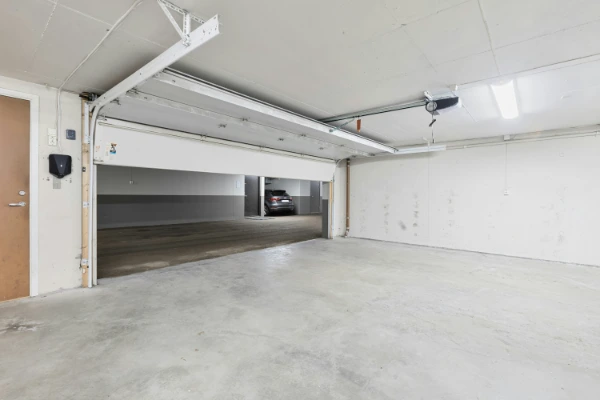

Det viktigste elementet ved garasjeporter er måten de åpnes på. Andre viktige faktorer å vurdere er varmeisolasjon, innbruddssikkerhet, komfort, estetikk og pris.

Dette er en av de mest populære variantene i dag. Portbladet består av flere segmenter, vanligvis 3 til 6, som er koblet sammen med hengsler og beskyttet med tetning. Dette gjør at skjøtene er bedre beskyttet mot ugunstige værforhold.
Automatisering for porter er i dag blitt standard. I Norge, hvor været varierer mye gjennom året, vil de fleste sette pris på en løsning som gjør hverdagen enklere og mer komfortabel.
Når du velger automasjon, er det best å rådføre seg med en fagperson. Avhengig av portens størrelse, konstruksjon, vekt, bruksfrekvens, plass under taket og andre forhold, kan riktig løsning velges med optimal effekt, hastighet og energibehov.